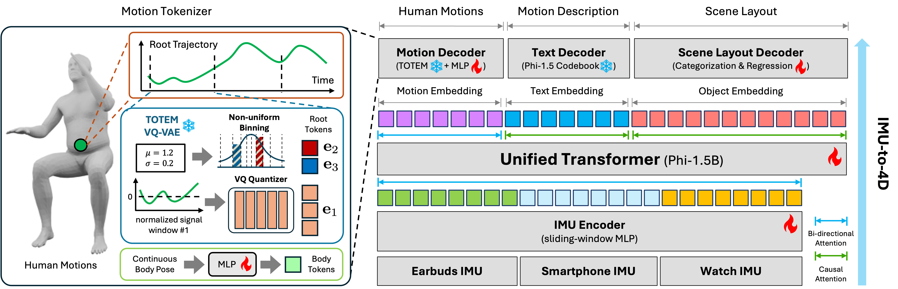
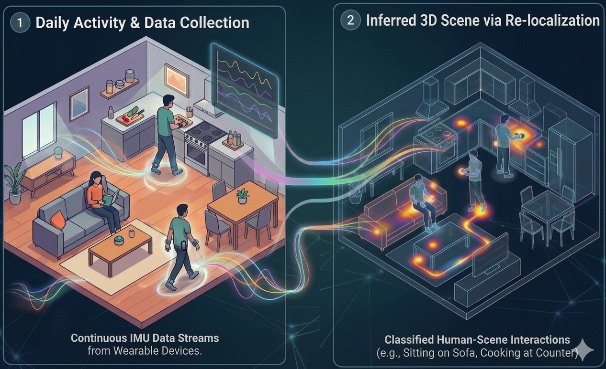

Understanding human activities and their surrounding environments typically relies on visual perception, yet cameras pose persistent challenges in privacy, safety, energy efficiency, and scalability. We explore an alternative: 4D perception without vision. Its goal is to reconstruct human motion and 3D scene layouts purely from everyday wearable sensors. For this we introduce IMU-to-4D, a framework that repurposes large language models for non-visual spatiotemporal understanding of human-scene dynamics. IMU-to-4D uses data from a few inertial sensors from earbuds, watches, or smartphones and predicts detailed 4D human motion together with coarse scene structure. Experiments across diverse human-scene datasets show that IMU-to-4D yields more coherent and temporally stable results than SoTA cascaded pipelines, suggesting wearable motion sensors alone can support rich 4D understanding.

(Left) Motion Tokenizer. The root trajectory is chunked into fixed-length windows and normalized, where normalized chunks are VQ-quantized and normalization parameters μ and σ are separately quantized via non-uniform binning, together yielding compact discrete root tokens. Body poses are continuously encoded via an MLP to produce body tokens. (Right) Multi-modal Transformer. Inertial signals from earbuds, smartphone, and watch are encoded and fed into a unified transformer, which jointly decodes human motion via bidirectional attention, and motion descriptions and scene layout autoregressively via causal attention.
Starting locations of our prediction and MobilePoser are shifted slightly for clarity. MotionGPT3 takes MobilePoser motion predictions as input.
We visualize ground-truth objects and objects predicted by our method in the first frame. Starting locations are shifted slightly for clarity. Summon takes MobilePoser motion predictions as input.
Note: assets provided in the original dataset have broken textures, leading to rendering artifacts.
Imagine an everyday setting where a person performs many activities within the same environment, such as their home. Can our model infer the 3D scene layout and human–scene interactions from IMU signals collected during these activities?
We refer to this as 3D re-localization. This task is non-trivial because IMU signals only capture motion relative to the first reading, containing no absolute positional information — the model must implicitly encode scene structure and reason about where each activity plausibly occurs.
To evaluate this, we fine-tune our model on a subset of ParaHome sequences, where motions are captured within a fixed 3D scene. Given new IMU signals, the goal is to recover the person's initial global translation and orientation within the scene.

Our method can be extended to jointly predict dynamic objects and human motions from IMU signals on the OMOMO dataset.
We ablate the choice of autoregressive (causal) and bidirectional attention mechanisms for decoding motion tokens. While autoregressive decoding supports online and streaming settings, it is susceptible to error accumulation over long horizons; bidirectional attention leverages the full context for higher accuracy at the cost of requiring the complete input sequence upfront.
Human motion may drift over time due to the accumulation of prediction errors, a limitation shared by all IMU→motion methods. We believe incorporating loop-closure mechanisms could alleviate this issue, and leave this direction for future work.
IMU-to-scene prediction is highly ill-posed, as multiple scene layouts can correspond to the same IMU signals or motion sequences. We observe that objects predicted by our approach may sometimes not match the ground truth; this ambiguity could be mitigated with larger-scale datasets or by incorporating stronger priors about scene layouts. Additionally, predicted objects may exhibit interpenetrations, as our model does not explicitly enforce penetration constraints — incorporating such penalties could help alleviate this problem.
@article{hsu2026imu4d,
title={Seeing Without Eyes: 4D Human-Scene Understanding from Wearable IMUs},
author={Hsu, Hao-Yu and Cheng, Tianhang and Wen, Jing and Schwing, Alexander G and Wang, Shenlong},
journal={arXiv preprint},
year={2026}
}